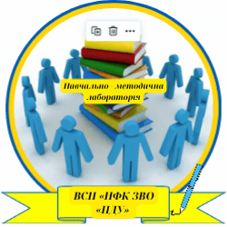
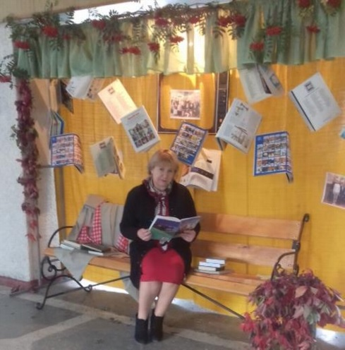
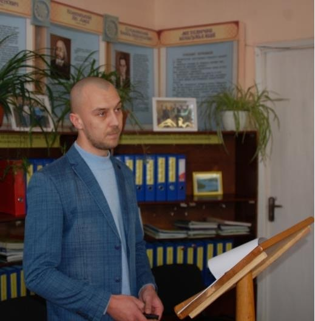
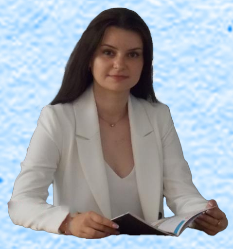

НАВЧАЛЬНО-МЕТОДИЧНА ЛАБОРАТОРІЯ
Юлія МЕЛЬНИК  Євгена СКРИПНИК  Ігор ЯКУБОВ  Тетяна МОКРА Олег ЛІСОВИЙ СПЕКТР ДІЯЛЬНОСТІ Розвиток суспільства, основні показники його життєдіяльності мають величезний вплив на зміни у свідомості, освіті та організації щоденної роботи кожного працівника і викладача. Вимогами часу є не тільки відданість своїй справі, а й важливість спіймати хвилю креативу, своєчасно запустити генератори навчально-методичної, патріотично-виховної і гуманітарно- просвітницької діяльності. У програмі розвитку аграрної освіти визначено, що підвищити її якість, можливо завдяки приведення освіти до міжнародних вимог, шляхом широкого вибору цифрових інноваційних моделей, методів і засобів навчання. Тому навчально-методична лабораторія ВСП «НФК ЗВО «ПДУ» має
широкий спектр діяльності, а саме:
Завідувач навчально-методичної лабораторії
спеціаліст вищої категорії, викладач-методист
Методист
Викладач, спеціаліст першої категорії
Методист відділення
викладач, спеціаліст другої категорії
Методист навчально- методичної лабораторій
викладач, спеціаліст другої категорії
Інженер комп’ютерних систем
викладач, спеціаліст
– організація і керівництво пошуково-дослідницької роботи здобувачів освіти;
– проведення моніторингу пошуково-дослідницької роботи здобувачів освіти і викладачів;
– співпраця з обдарованою молоддю та органами студентського самоврядування;
– координація роботи гуртків та студентського наукового товариства;
– просвітницький, волонтерський рух;
– робота з архівом коледжу;
– організація заходів щодо популяризації кращих досягнень здобувачів освіти і викладачів: на сайті коледжу, інформаційних стендах, педагогічних радах, адміністративних радах;
– музейна світлиця, організація екскурсій до музеїв селища і коледжу (Бойової і трудової слави) ;
– координація роботи голів ЦК, творчих груп; – організація і координація роботи студентського наукового товариства «Перші наукові кроки»;
– організація і планування роботи школи обміну досвідом для удосконалення і впровадження сучасних інтерактивних методів навчання;
– організація роботи по створенню методичного забезпечення навчально-методичної лабораторії: положень, інструкцій, анкет, рекомендацій, методичних розробок, інструктажів тощо.
– створення банку методичних розробок: з пошукової роботи, нових технологій, зразків планів гурткової роботи, звітно-плануючої документації;
– організація виставок кращих методичних розробок;
– організація методичних семінарів для здобувачів освіти і викладачів;
– організація та проведення науково-методичних та практичних конференцій і круглих столів;
Формами роботи навчально-методичної лабораторії є:
– наради з головами циклових комісій, керівниками творчих груп;
– семінари з методичного забезпечення і впровадження нових форм в навчально-виховний процес;
– аналіз і створення методичних рекомендацій для теоретичного і практичного циклу навчання;
– конференції з обміну досвідом, круглі столи, навчаючі семінари тощо.
– публікації статей, рефератів, доповідей на сайті коледжу, періодичній пресі, журналах, інформаційних вісниках.
Навчально-методична лабораторія взаємодіє з:
– заступником директора з навчальної роботи та практичного навчання,
– завідувачем методичного кабінету;
– завідувачем відділення;
– головами циклових комісій;
– методистами;
– студентським самоврядуванням;
– спеціалістом з працевлаштування;
– бібліотекою;
- психологом та соціальним педагогом коледжу.